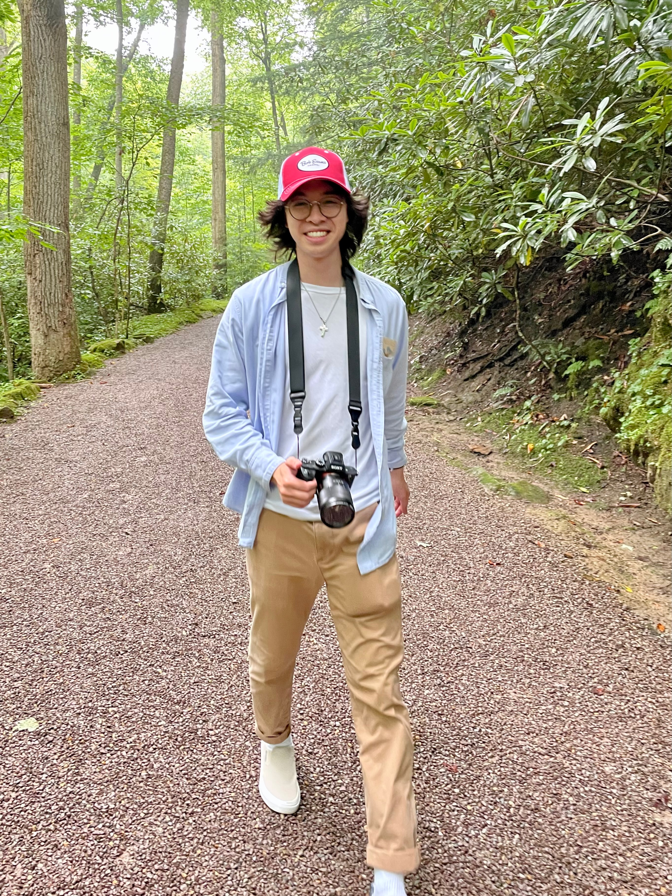

Lance D. Wong
Hi, I'm Lance. Currently, I am a 3rd year student at Columbia University studying math and computer science (AI track). I like photography and lifting.
ldw2125@columbia.edu ;
LinkedIn ;
GitHub
Summary
I am a student with software engineering experience. My work experience includes two summers at AbbVie with several hackathons and side projects.
At AbbVie, I have worked on full stack web applications, learning/data science projects, and even a VR project in Unity for the AbbVie company Hackathon (HackVie). See resume for more details.
Prior to AbbVie, I did research at UMass Medical School with Prof. Jillian Richmond on auto immune diseases. See Misc. section for more details.
Projects
HackVie 2022
Our project focused on turning a standard manufacturing Standard Operating Procedure (SOP) into an interactive and fun VR simulation.
Please see our PowerPoint and video demo for more details.
Our team did quite well and won both the business case and grand award.
Music Motions
Working with Seven Hills, I collaborated with two other students to develop a face-tracking piano app that allows the user to play, save, and export music files using Android Studio and OpenCV
If interested, please see our GitHub.
InStockBot
Inspired by my first Python class in college taught by one of my favorite proffessors, Dr. Bauer, and my need to build a PC during the pandemic, I wrote a brief Python script to detect when items were in stock or discounted and email me a qualitative report.
Not very good code from when I first started, but it can be seen here.
Miscellaneous
Biology Research
In highschool, I was (and still am) very interested in biology research. I interned with Brown University professor Dr. Lim to do my first science fair project. My project ended up winning the 2nd place award at regionals and the 4th place award at states. If interested, more details here.
I also interned with Dr. Richmond to do research on autoimmune diseases such as lupus and morphea. I learned over 10 types of lab assays that I would routinely perform on a regular basis along with data analysis and scientific writing skills. I contributed numerous figures to publications and several articles to our lab page.
Website powered by w3.css